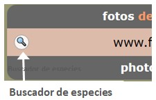
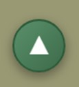
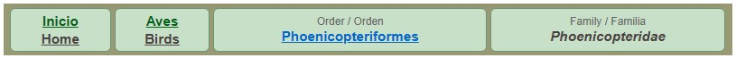
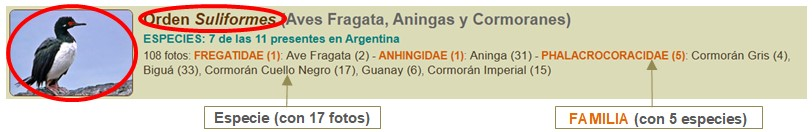
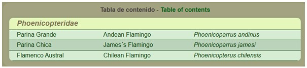
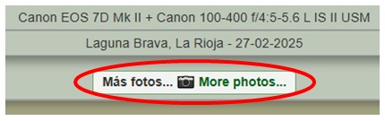
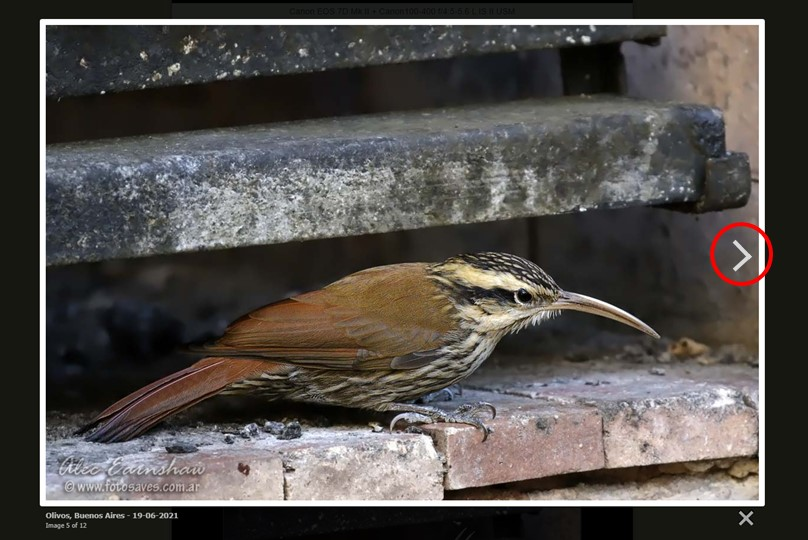

¡Descubre cómo navegar el sitio y aprovechar al máximo tu visita!
Actualmente el sitio cubre aproximadamente el 80% de las aves normalmente registradas en Argentina, por lo que puede que encuentres que el ave que buscas no esté presente.
Pero antes de rendirte, intenta buscar con nombres alternativos, o explora la familia para ver si está allí. Si no, puedes estar seguro de que lamento tanto como tú, y más, no tener fotos de cada ave posible. ¡Trabajando en ello...
 |
Botón de búsqueda de especiesBúsqueda multilingüe (inglés / español / científico) de especies representadas en el sitio.Te lleva instantáneamente a la página de la especie. Ingresa 2 o más letras para comenzar a obtener resultados. Mostrará como máximo 12 resultados coincidentes. Luego haz clic en la fila para saltar a la especie que deseas. |
 |
Botón volver arribaEste botón aparecerá en la esquina inferior derecha una vez que hayas desplazado hacia abajo cierta distancia.Haz clic en él para volver arriba de la página. |

Todas las páginas muestran las "migas de pan" justo debajo del encabezado. Piensa en ello como un "rastro" que te muestra dónde estás en el árbol familiar.
Si estás en una página de especie, un enlace azul te llevará al grupo "padre" contenedor, que puede ser un orden, suborden, familia o subfamilia.
Haz clic en el enlace Aves para volver a la página principal de aves, o en Inicio para explorar otras partes del sitio.
El primer nivel de clasificación de aves es por Órdenes. Pero algunos órdenes son tan grandes, que a veces es mejor dividirlos:
- En Subórdenes (como es el caso de las aves playeras - Charadriiformes)
- En Familias (para dar mejor visualización de grupos icónicos, como vencejos, colibríes, tucanes y carpinteros
- El orden muy grande de los Passeriformes muestra todas las familias y a veces incluso Subfamilias (notablemente para los Furnariidae).
Así que dependiendo del caso, puedes navegar "profundizando" hasta el nivel de grupo. Haz clic en la imagen o el nombre del grupo, como se marca en rojo en la imagen de abajo. Esta ilustración también muestra cómo interpretar la información detallada proporcionada para cada grupo.



Como antes, puedes hacer clic en la imagen para agrandar la foto. Pero ahora también puedes hacer clic en el símbolo ">" en el borde derecho de la foto (encerrado en rojo abajo), o "<" en el borde izquierdo, (o usar las flechas izquierda y derecha del teclado) para navegar por el resto de las imágenes, viéndolas todas en tamaño agrandado. Ten en cuenta que para que aparezcan las flechas izquierda o derecha, el mouse debe estar flotando sobre la imagen, en el lado izquierdo o derecho, respectivamente.
Al ver las imágenes de esta manera, la información de ubicación y fecha de cada foto será visible a la izquierda, debajo de la imagen.
Debajo de eso hay un contador que muestra cuántas imágenes quedan, o si has llegado al final.

Vuelve al inicio de la página haciendo clic en el botón redondo "volver arriba", y luego usa los enlaces de migas de pan para continuar explorando el sitio.